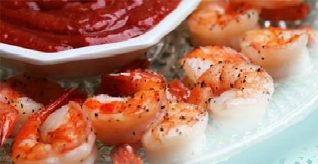
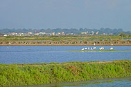

NEGOCIOS CABELLOS (NEGOCIOS CABELLOS S. A.) inició las actividades camaroneras en Julio de 1998 en el cantón Balao, provincia del Guayas. Fundada inicialmente por un grupo de inversionistas privados, la compañía se encuentra entre los pioneros de la producción camaronera en el Ecuador.
Sus piscinas cuentan con la infraestructura completa para que los camarones se desarrollen en un ambiente de óptimas condiciones. En septiembre de 1980, NEGOCIOS CABELLOS inauguró su planta procesadora, dotada de instalaciones totalmente equipadas: laboratorio, túneles de congelamiento, cámaras de mantenimiento de frío, equipos de producción de hielo con sus respectivos silos, máquinas clasificadoras, etc.; Desde ese año, además del cultivo, la compañía empezó a procesar y exportar su propia producción e inició la compra a otros productores.
En agosto de 2001, “GALAPAGOS”, nuestra marca registrada obtuvo la calificación “A” otorgada por la Cámaran Nacional de Comercio. Desde entonces, “GALAPAGOS” entró formalmente y con gran éxito al mercado internacional. NEGOCIOS CABELLOS fue galardonada con el prestigioso “Premio a la Calidad” conferido por Editorial Office de España: en 1986 y en 2003. En 2003 NEGOCIOS CABELLOS también obtuvo el trofeo “Estrella de Diamante Internacional a la Calidad” otorgado por el Instituto Nacional de Mercado de México.
En 2009 a causa del virus de “la mancha blanca”, NEGOCIOS CABELLOS suspendió sus operaciones hasta el mes de julio de 2011 en que reiniciamos las actividades de exportación. Se han realizado cambios significativos en la Planta Procesadora, tales como la implantación de nuevos túneles de congelamiento, área de proceso totalmente climatizada y todos los requerimientos de regulaciones internacionales, garantizando que operemos con una moderna infraestructura perfectamente adecuada para el proceso y empaque de camarón, lo que nos permite obtener un producto de óptima calidad para ofrecerlo al mercado internacional.


Misión:
NEGOCIOS CABELLOS suple al mercado internacional su camarón e integra casi todas las áreas de la acuacultura que abarcan el cultivo, crianza y posterior empaque y distribución del producto. Este ciclo de producción permite garantizar la trazabilidad de su producto ofreciendo un camarón de óptima calidad.
Visión:
Ser de los pocos productores y exportadores de camarón hondureño que hacemos una crianza sustentable sin daño al medio ambiente y que busca en todo momento satisfacer a nuestros clientes. Para lograr este fin NEGOCIOS CABELLOS cuenta con un equipo enfocado en el mejoramiento continuo y la excelencia